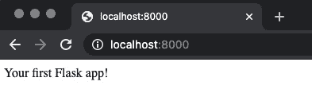
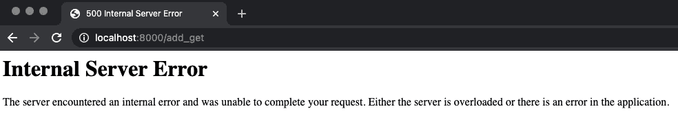
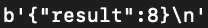
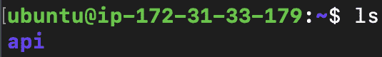

在这一章中，你将学习如何部署任何自动化的机器学习模型，包括本地主机和云。如果你的目标是制造机器学习驱动的软件，你将了解为什么部署步骤是必要的。假设你知道如何用TPOT训练基本的回归和分类模型。不需要了解最后几章的主题(Dask和神经网络),因为我们在这里不会涉及这些。
在本章中，您将了解到将您的模型包装在API中并向其他不一定是数据科学家的用户展示其预测能力是多么容易。您还将了解哪些云提供商是让您完全免费入门的最佳选择。
本章将涵盖以下主题:
Flask和Flask-RESTful如前所述，你需要知道如何用TPOT建立基本的机器学习模型。如果您对这个库还不太适应，请不要担心，因为我们将从头开始开发这个模型。如果你对TPOT完全陌生，请参考 第二章深入TPOT第三章探索回归与TPOT第四章探索分类与TPOT 。
这一章代码会相当多，如果卡住了可以参考官方的GitHub资源库:https://GitHub . com/packt publishing/Machine-Learning-Automation-with-TPOT/tree/main/chapter 08。
如果你已经在经历训练和优化机器学习模型的麻烦，为什么不更进一步，部署它，让每个人都可以使用它？
也许你想在web应用程序中使用模型的预测能力。也许你是一名移动应用程序开发人员，想要将机器学习引入Android和iOS。选项层出不穷且各不相同，但所有选项都有一个共同点，即需要部署。
现在，机器学习模型部署与机器学习无关。目标是编写一个简单的REST API(最好用Python，因为这是整本书使用的语言),并向外界公开任何形式的调用predict()函数的端点。您希望将参数以JSON格式发送到您的应用程序，然后将它们用作模型的输入。一旦做出预测，您可以简单地将它返回给用户。
是的，这就是机器学习模型部署的全部内容。当然，事情可能会变得更加技术化，但是保持事情的简单性将会让我们达到95%的目标，并且你总是可以进一步探索来挤压那额外的5%。
当涉及到模型部署的技术方面时，Python为您提供了许多选择。您可以使用Flask和Flask-RESTful、FastAPI、Django或Pyramid。当然，还有其他选择，但它们的“市场份额”或多或少可以忽略不计。从下一节开始，您将使用本章中的第一个选项。
接下来的部分旨在通过几个基本的实践示例向您介绍这些库。之后我们将深入研究机器学习。
Flask是一个用于构建web应用的轻量级框架。它使您能够在需要时开始简单和规模。Flask-RESTful是对Flask的扩展，它允许你立刻构建REST APIs。
要开始使用这两个软件，你需要安装它们。您可以从终端执行以下行:
> pip install flask flask-restful
这就是你开始工作所需要的一切。让我们先来探索一下Flask的基础知识:
Flask. It won't do anything useful, but it's still a step in the right direction. 首先，您需要导入库并创建一个应用程序实例。然后你必须创建一个函数，返回你想要在网站上显示的内容，并用一个@app.route(route_url)装饰器来装饰这个函数。请记住，您应该用函数应该显示结果的URL字符串替换route_url。如果您传入一个正斜杠(/)，结果将显示在根页面上——但稍后会详细介绍。
最后，您将使用通过if __name__ == '__main__'检查使Python文件可运行。应用程序将在本地主机的端口8000上运行。
请参考您的第一个Flask应用程序的以下代码片段:
from flask import Flask
app = Flask(__name__)
@app.route('/')
def root():
return 'Your first Flask app!'
if __name__ == '__main__':
app.run(host='0.0.0.0', port=8000)要运行应用程序，您必须从终端执行Python文件。这个文件在我的机器上被命名为flask_basics.py，所以要运行它，请执行以下命令:
Running on http://0.0.0.0:8000/message, you can see where the application is running, ergo which URL you need to visit to see your application. Just so you know, the0.0.0.0part can be replaced withlocalhost.在那里，您将看到显示以下内容，表明一切工作正常:
图8.2–您的第一个烧瓶应用
这就是用
Flask构建你的第一个web应用程序有多容易。接下来，您将学习如何让事情变得更复杂。
Flask – but that's not why you're here. We want to make APIs instead of apps, and that's a bit of a different story. The difference between them is quite obvious – APIs don't come with a user interface (except for the documentation page), whereas web apps do. APIs are just a service. As it turns out, you can build APIs with Flask out of the box. We'll explore how to do so and explain why it isn't the best option.首先，创建一个新的Python文件。该文件将被称为flask_basics2.py。在其中，我们将为两种可能的API调用类型提供一个单一的路由。两者都有将两个数相加并返回结果的任务，但它们的方式不同。让我们列出不同之处:
a) /adding (GET)依赖于前面实现的逻辑。更准确地说，GET请求是在端点被调用时发出的。唯一不同的是这一次，参数是在URL中传递的。例如，调用/adding?num1=3&num2=5应该在屏幕上显示8。参数值直接从URL中提取。您将看到这一点在起作用，因此一切将立即变得清晰。
b) /adding (POST)与第一个端点非常相似，但是发出POST请求。这是一种更安全的通信方法，因为参数值不是直接在URL中传递，而是在请求正文中传递。这个端点将总和作为JSON返回，所以您需要将结果包装在flask.jsonify()函数中。
两个函数都旨在完成相同的任务——将两个数相加并返回结果。下面是一个如何实现这种逻辑的例子:
from flask import Flask, request, jsonify
app = Flask(__name__)
@app.route('/adding')
def add_get():
num1 = int(request.args.get('num1'))
num2 = int(request.args.get('num2'))
return f'<h3>{num1} + {num2} = {num1 + num2}</h3>'
@app.route('/adding', methods=['POST'])
def add_post():
data = request.get_json()
num1 = data['num1']
num2 = data['num2']
return jsonify({'result': num1 + num2})
if __name__ == '__main__':
app.run(host='0.0.0.0', port=8000)如您所见，add_get()函数返回一个HTML格式的字符串。如果你想的话，你可以返回整个HTML文档，但是这不是我们现在感兴趣的事情，所以我们不会深入研究。
要运行应用程序，您必须从终端执行Python文件。这个文件在我的机器上被命名为flask_basics2.py，所以要运行它，请执行以下命令:
/addingfor GET first:import requests req = requests.post( url='http://localhost:8000/adding', json={'num1': 3, 'num2': 5} ) res = req.content print(res)如果您现在运行这段代码，您会看到以下输出:
图8.6–带参数的POST端点(Python)
这本质上是一个字符串，所以在您可以处理返回值之前，到JSON的一些转换将是强制性的。稍后，在第九章的 中，将部署的TPOT车型用于生产。
到目前为止，您已经看到了如何使用
Flask库来开发web应用程序和web服务(API)。这是很好的第一个选择，但是如果您只对构建API感兴趣，还有一个更好的方法。接下来就来探索一下。
Flask-RESTful installed. The syntax when using it is a bit different. It uses the get(), post(), and put(), which represent what happens when a request of a particular type is made.所有API类都继承自Flask-RESTful.Resource类，每个端点必须通过add_resource()方法手动绑定到特定的URL字符串。
总而言之，我们将拥有Add类，它有两个方法:get()和post()。这些方法中的所有逻辑都与我们之前的相同，只有一个例外——我们不会在任何地方返回HTML。
下面是整个代码片段:
from flask import Flask, request, jsonify
from flask_restful import Resource, Api
app = Flask(__name__)
api = Api(app)
class Adding(Resource):
@staticmethod
def get():
num1 = int(request.args.get('num1'))
num2 = int(request.args.get('num2'))
return num1 + num2
@staticmethod
def post():
data = request.get_json()
num1 = data['num1']
num2 = data['num2']
return jsonify({'result': num1 + num2})
api.add_resource(Adding, '/adding')
if __name__ == '__main__':
app.run(host='0.0.0.0', port=8000)在/adding端点上可以获得Adding类中的所有内容。
正如你所看到的，这个API将运行在不同的端口上，只是为了让容易区分这个API和之前的那个。
如果你现在打开http://localhost:8000/adding，你会看到下面的消息:
图8.7–不带参数的Flask-RESTful GET
我们现在有了与默认的Flask API相同的错误，原因是URL中没有给出参数值。如果您要更改它并调用http://localhost:8000/adding?num1=5&num2=10，您将在浏览器窗口中看到以下内容:
图8.8–带参数的Flask-RESTful GET
正如前面提到的，直接从浏览器与API通信被认为不是一个好的实践，但是你仍然可以用GET请求类型来做。你最好使用诸如Postman这样的工具，而且你已经知道怎么做了。
至于POST方法，可以调用与前面相同的URL，http://localhost:8000/adding，并在请求体中以JSON的形式传递参数。以下是使用Postman的方法:
图8.9–带邮递员的Flask-RESTful帖子
您可以通过Python做同样的事情，但是现在您应该已经知道如何做了。
现在你已经知道了用Python、Flask和Flask-RESTful开发REST API的基础。这是一个相对快速的动手部分，为接下来的内容做了铺垫。在下一节中，我们将回顾一些部署机器学习模型的最佳实践，在最后两节中，我们将探索如何分别训练和部署模型到本地主机和云中。
自动化模型的部署或多或少与普通机器学习模型的部署相同。归结起来就是首先训练模型，然后以某种格式保存模型。在正常机器学习模型的情况下，你可以很容易地将模型保存到一个.model或.h5文件中。没有理由不对TPOT模型做同样的事情。
如果你还记得前面的章节，TPOT可以将最好的管道导出到Python文件中，这样如果这个管道还没有被训练过，它就可以被用来训练这个模型，并且这个模型可以在以后被保存。如果模型已经定型，则只获得预测。
通过检查文件是否存在，可以检查模型是否被训练过。如果模型文件存在，我们可以假设该模型已经过训练，因此我们可以加载它并进行预测。否则要先对模型进行训练和保存，然后才能进行预测。
在连接到机器学习API时，使用POST请求类型也是一个好主意。这是一个比GET更好的选择，因为参数值不直接在URL中传递。您可能知道，参数值可能很敏感，因此尽可能隐藏它们是个好主意。
例如，在进行预测之前，您可能需要使用API进行身份验证。很容易理解为什么在URL中直接发送您的用户名和密码凭证不是一个好主意。POST已经覆盖了你，这一章的其余部分将很好地利用它。
简而言之，在进行预测之前，您应该始终检查模型是否经过训练，并在需要时对其进行训练。另一个要点是，在我们的情况下，POST比GET更好。现在，您已经知道了一些部署机器学习模型的基本最佳实践。在下一节中，我们将训练模型并将其部署到本地主机。
在部署之前，我们必须训练一个模型。你已经知道了和TPOT一起训练的一切，所以我们不会在这里花太多时间。目标是训练一个简单的虹膜分类器，并以某种方式输出预测功能。让我们一步一步地完成这个过程:
import pandas as pd
df = pd.read_csv('data/iris.csv')
df.head()这是前几行的样子:
图8.10–Iris数据集的前几行
a)Setosa–0
b)Virginica–1
c)变色–2
下面几行代码完成了描述的所有工作:
X = df.drop('species', axis=1)
y = df['species']
y = y.replace({'setosa': 0, 'virginica': 1, 'versicolor': 2})
y下面是目标变量现在的样子:
图8.11-值重新映射后的目标变量
以下代码将在整个数据集上训练模型:
from tpot import TPOTClassifier clf = TPOTClassifier( scoring='accuracy', max_time_mins=15, random_state=42, verbosity=2 ) clf.fit(X, y)
在训练过程中，您会看到许多输出，但达到100%的准确率应该不会花太长时间，如下图所示:
图8.12-TPOT培训流程
在15分钟的时间框架内，会经过多少代取决于您的硬件，但是一旦完成，您应该会看到类似下面的内容:
图8.13-培训后的TPOT输出
fitted_pipeline_ property:clf.fitted_pipeline_
它是一个管道对象，可以导出供以后使用。它应该是这样的(请记住，您可能会在您的机器上看到一些不同的东西):
图8.14-TPOT装配管道
predict() function of the fitted_pipeline_ property with a 2D array of input data, representing a single flower species:clf.fitted_pipeline_.predict([[5.1, 3.5, 0.2, 3.4]])
结果显示在下图中:
图8.15-TPOT预测
还记得几页前我们的重新映射策略吗？0表示该物种被归为setosa。
joblib library makes this step easy to do, as you just have to call the dump() function to save the model and the load() function to load the model.这里有一个快速演示。目标是将fitted_pipeline_属性保存到一个名为iris.model的文件中。您可以使用以下代码来实现这一点:
import joblib joblib.dump(clf.fitted_pipeline_, 'iris.model')
这就是全部了！一旦模型保存到文件中，您将看到以下输出:
图8.16–保存TPOT模型
仅仅为了验证模型是否仍然有效，您可以使用load()函数将模型加载到一个新变量中:
loaded_model = joblib.load('iris.model')
loaded_model.predict([[5.1, 3.5, 0.2, 3.4]])
上述代码的输出如下图所示:
图8.17–已保存模型的预测
这就是保存机器学习模型以备后用是多么容易。我们现在已经具备了部署该模型所需的一切，接下来让我们开始吧。
模型部署过程将与我们之前用Flask和Flask-RESTful所做的非常相似。在进入分步指南之前，您应该使用以下目录/文件结构为您的API创建一个目录:
图8.18–API目录结构
如你所见，根文件夹叫做api，里面有两个Python文件——app.py和helpers.py。该文件夹还具有用于存储先前训练的模型的另一个文件夹。
接下来让我们一步一步地构建API:
helpers.py file. The goal of this Python file is to remove all calculations and data operations from app.py. The ladder is used only to declare and manage the API itself, and everything else is performed elsewhere.helpers.py文件将有两个功能——int_to_species(in_species)和predict_single(model, X)。
第一个函数的目标是反转我们之前声明的映射，并返回给定整数表示的实际花卉种类名称。下面是给定整数输入时返回的字符串的具体列表:
a)0—setosa
b)1—virginica
c)2—versicolor
如果传递了其他数字，则返回一个空字符串。您可以找到该函数的代码，如下所示:
def int_to_species(in_species): if in_species == 0: return 'setosa' if in_species == 1: return 'virginica' if in_species == 2: return 'versicolor'
现在转到predict_single(model, X)功能。它的目的是在给定模型和输入值列表的情况下，返回预测及其概率。该函数还进行以下检查:
a)X是列表吗？如果不是，则引发一个异常。
b)X是否有四项(萼片长度、萼片宽度、花瓣长度、花瓣宽度)？如果不是，则引发一个异常。
这些检查是必需的,因为我们不希望坏的或格式错误的数据进入我们的模型并使API崩溃。
如果所有检查都通过，预测和概率将作为一个字典返回给用户，旁边是为每个参数输入的数据。下面是实现这个函数的方法:
def predict_single(model, X):
if type(X) is not list:
raise Exception('X must be of list data type!')
if len(X) != 4:
raise Exception('X must contain 4 values - \
sepal_length, sepal_width, petal_length, petal_width')
prediction = model.predict([X])[0]
prediction_probability =\
model.predict_proba([X])[0][prediction]
return {
'In_SepalLength': X[0],
'In_SepalWidth': X[1],
'In_PetalLength': X[2],
'In_PetalWidth': X[3],
'Prediction': int_to_species(prediction),
'Probability': prediction_probability
}这里有一个调用predict_single()函数的例子:
predict_single(
model=joblib.load('api/model/iris.model'),
X=[5.1, 3.5, 0.2, 3.4]
)图8.19–调用predict_single()函数的结果
app.py now. If you have been following along from the beginning of this chapter, coding out this file will be a piece of cake. The goal is to have the model loaded at all times and to trigger the post() method of the PredictSpecies class when a /predict endpoint is called. You'll have to implement both the class and the method yourself.用户必须以JSON的形式传递输入数据。更准确地说，每个flower测量值都是单独传递的，因此用户必须指定总共四个参数的值。
如果一切顺利，调用helpers.py中的predict_single()函数，并将结果返回给用户。
让我们来看看app.py的实现:
import joblib
import warnings
from flask import Flask, request, jsonify
from flask_restful import Resource, Api
from helpers import predict_single
warnings.filterwarnings('ignore')
app = Flask(__name__)
api = Api(app)
model = joblib.load('model/iris.model')
class PredictSpecies(Resource):
@staticmethod
def post():
user_input = request.get_json()
sl = user_input['SepalLength']
sw = user_input['SepalWidth']
pl = user_input['PetalLength']
pw = user_input['PetalWidth']
prediction =\
predict_single(model=model, X=[sl, sw, pl, pw])
return jsonify(prediction)
api.add_resource(PredictSpecies, '/predict')
if __name__ == '__main__':
app.run(host='0.0.0.0', port=8000)> python app.py
如果一切顺利，您将得到以下消息:
图8.20–运行API
http://localhost:8000. We'll use the Postman application to test the API.下面是第一个例子:
图8.21–API测试示例1
正如你所看到的，这个模型100%确信这个物种属于setosa类。让我们试试另一个:
图8.22–API测试示例2
这具有相同的置信水平，但是不同的预测类别。让我们将事情混在一起，传递与训练集中的任何内容稍有不同的值:
图8.23–API测试示例3
如您所见，该模型这次不是100%有信心，因为输入数据与培训时看到的数据有很大不同。
现在您已经有了——部署到本地主机的TPOT模型!本章剩下要做的唯一一件事是将模型带到云中，并使它可以从任何地方访问。让我们接下来做那件事。
云机器学习模型的部署就是创建一个云虚拟机，把我们的API转移给它，然后运行它。这是一个乏味的过程，随着重复变得容易，因为涉及到许多步骤。如果你完全按照这一部分的每一步来做，一切都会好的。请确保不要错过任何小细节:
图8.24–AWS注册网站
ubuntu in the search bar:图8.26–Ubuntu Server 20.04
一旦点击选择，你将必须指定类型。如果您不想付费，请确保选择免费版本:
图2.27–Ubuntu实例类型
接下来，点击查看并启动按钮。您将进入以下屏幕:
图2.28-Ubuntu实例确认
一旦你点击发射，下面的窗口就会出现。确保选择相同的选项，但密钥对名称由您决定:
图8.29-Ubuntu密钥对
输入详细信息后，点击下载密钥对按钮。下载完成后，您可以点击启动实例按钮:
图8.30-启动Ubuntu实例
图8.31–查看实例
您将立即看到您创建的实例。可能需要一些时间才能看到实例正在运行，所以请耐心等待:
图8.32–运行实例
.ppk file in the Key file option. After the Connect button is pressed, you'll see the following:图8.36–FileZilla主机密钥
图8.37–FileZilla成功连接
现在您可以将 api 文件夹拖到远程虚拟机上的 ubuntu 文件夹中，如下所示:
图8.38–将API数据传输到远程虚拟机
在进一步配置和启动API之前，让我们探索一下如何通过终端获得连接。
.pem文件存储的地方。在那里，执行下面的命令来改变权限:TPOT_Book_KeyPair.pemwith your filename and also make sure to write your instance name afterubuntu@. If you did everything correctly, you should see the following in your terminal:> sudo apt-get update && sudo apt-get install python3-pip最后，让我们安装每个需要的库。下面是在虚拟环境中这样做的命令:
> pip3 install virtualenv > virtualenv tpotapi_env > source tpotapi_env/bin/activate > pip3 install joblib flask flask-restful sklearn tpot在启动API之前，您还需要完成一些步骤，比如管理安全性。
T29】
首先，导航到边栏上的网络&安全 | 安全组:
图8.40-安全组
您应该会在浏览器窗口的右上角看到创建安全组按钮:
图8.41–创建安全组按钮
一旦新窗口弹出，你将必须指定几样东西。安全组名称和描述字段完全是任意的。另一方面，入站规则组不是任意的。您必须添加一个具有以下选项的新规则:
a) 类型 : 所有流量
b) 来源 : 任何地方
请参考下图了解更多信息:
图8.42–创建安全组
指定正确的值后，您必须向下滚动到屏幕的末尾，并单击创建安全组选项:
图8.43–验证安全组
我们还没完呢。下一步是去侧边栏上的网络&安全 | 网络接口选项:
图8.44–网络接口选项
一旦出现，右键单击唯一可用的网络接口(假设这是您第一次进入AWS控制台)并选择更改安全组选项:
图8.45–更改安全组
这样做的目的是将“从任何地方访问”规则分配给我们的虚拟机。弹出窗口后，从下拉选项中选择之前声明的安全组:
图8.46–选择安全组
图8.47–保存安全关联
Flask application (REST API). To do so, navigate to the /api folder and execute the following:> python3 app.py
您应该会看到下面这条熟悉的消息:
图8.48–通过终端启动REST API
就是这样！API现在正在运行，我们可以测试它是否正常工作。
图8.49–虚拟机URL
现在我们知道了完整的网址:http://ec2-18-220-113-224.us-east-2.compute.amazonaws.com:8000/predict。从现在开始的过程与在localhost上的过程相同，如下图所示:
图8.50–测试我们部署的API
正如您所看到的，连接通过了，API返回了一个响应，就像对待本地部署的版本一样。
这就是将机器学习模型部署到AWS虚拟机的完整过程。如果这是你的第一次，这个过程会很乏味，甚至很棘手。随着你部署越来越多的机器学习模型，这将变得更容易，因为程序是相同的。
如果你不希望你的API被任何人从任何地方访问，你可以考虑权限，但是这超出了本书的范围。这一章差不多结束了——伟大的作品！接下来是对所学内容的总结，以及另一个有趣的动手操作章节。
这一章是迄今为止最长的一章，包含了大量的实践任务。你很有希望能够继续学习，并了解如何在本地和云端部署用TPOT构建的机器学习模型。
现在，您可以部署任何用Python构建的机器学习模型。此外，如果您对前端技术(如HTML、CSS和JavaScript)有必要的了解，您还知道如何部署基本的Python web应用程序。我们没有深入这个领域，因为它超出了本书的范围。
在接下来的章节中， 第9章 ，在生产中使用部署的TPOT模型，您将学习如何围绕这个REST API构建一个基本的应用程序。更准确地说，您将学习如何创建一个简单、美观的web界面，根据输入数据预测花卉种类。但在此之前，您将练习用Python向我们的API发出请求。
和往常一样，请随意更详细地研究模型部署，因为AWS不是唯一的选择。有许多云提供商提供某种形式的免费层，而AWS只是池塘中的一条鱼。
joblib库背后的大致思路是什么？